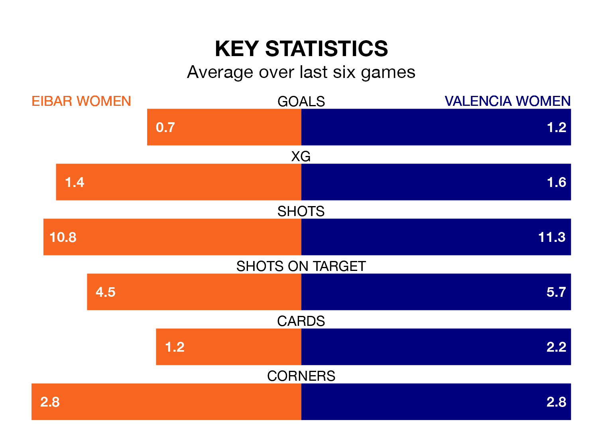

Valencia Women come to Instalaciones de Unbe to play Eibar Women on Sunday in poor form, having collected just three points from their last six games.
The visitors have won just one of their last six fixtures, while Eibar have two wins and four losses.
Eibar are 13th in the table after 13 games, of which they have won three and drawn one, earning 10 points.
Valencia are two places ahead of the home side in 11th, with four wins and two draws putting them on 14 points.
With nine goals in 13 games so far this season, Eibar are the league's second-lowest scorers with 0.7 goals per game. And they are conceding more than average, letting in 29 goals at a rate of 2.2 per game.
The visitors are also below average scorers, with 1.2 goals per game, compared to a league average of 1.6. They have conceded 2.3 goals per game.
In the last five years, Eibar and Valencia have played each other on four occasions. Eibar won one of them and Valencia the other.
On average, Eibar scored 1.8 goals and Valencia 2.0 in those matches.
Their last meeting was on May 15 2022, when Eibar won 5-1 at home.
Eibar's last match was on January 7, a 2-0 loss against Athletic Club Women.
Valencia lost 6-1 against Atletico Madrid Women last time out, also on January 7, with Paula Sancho González on the scoresheet.
Updated: 15:34, 08/01/24